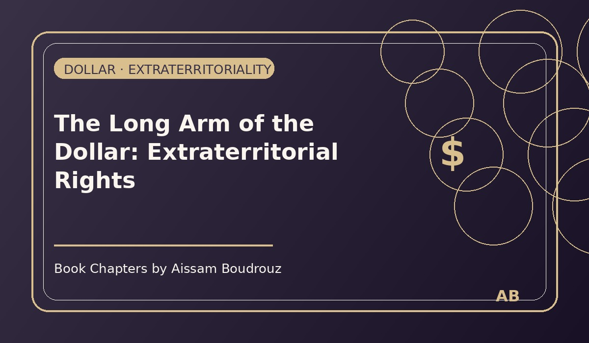

The Long Arm of the Dollar: Extraterritorial Rights
Whenever people talk about the American economy, someone always says the same thing:
"But how can the U.S. be so powerful when its trade balance is negative, unemployment rises and inequality grows?"
It's a fair question. On paper, the numbers often look worrying — deficits, debts, social divides. And yet, somehow, the United States remains the most dominant economy on Earth.
Some say it's because of its military power. Others point to the dollar's global role. Some mention oil or influence in the Middle East.
All of that is partly true. But there's another, less visible factor — one that economists rarely mention in casual conversations: extraterritorial rights.
The laws that travel farther than passports
In simple terms, extraterritoriality means that American laws don't stop at America's borders. They can be applied — and enforced — anywhere in the world.
If that sounds exaggerated, consider this: you don't need to live in the U.S. to be punished under U.S. law. You just need to touch anything American — a dollar, a bank transaction, a product, a technology, or even a contract.
Once the U.S. finds that connection, the rules apply.
And these rules bring in billions of dollars every year to the American Treasury — sometimes as much as the GDP of small countries.
How it works
Let's say your company in Europe trades with a country under U.S. sanctions — like Iran or Cuba. Even if your headquarters are in Paris or Madrid, if you used U.S. dollars in that transaction, the American government can prosecute you.
That's because the dollar passes through the U.S. banking system at some point — giving Washington the legal right to claim jurisdiction.
It's a bit like a spider web: if you touch any part of it, the center feels the vibration.
When foreign companies pay the price
This isn't theoretical. In 2018, one of France's largest banks was fined 1.4 billion dollars by the U.S. for violating sanctions — all because its transactions were in dollars.
And it wasn't the first time. Major European corporations — BNP Paribas, Alstom, Alcatel, and others — have all paid heavy penalties for similar reasons.
Imagine that: companies fined billions of dollars not by their own governments, but by a country on another continent.
That's legal power as an economic tool.
Why it matters
Through these extraterritorial laws, the U.S. gains three things at once:
- Money — huge fines flow into its economy.
- Control — every major global company must think twice before doing business in dollars.
- Influence — by enforcing its own rules abroad, America extends its reach without sending a single soldier.
It's the ultimate soft weapon — a form of economic sovereignty that stretches across the entire planet.
The unseen empire
So while analysts debate deficits, debt, or unemployment, the U.S. quietly collects billions through legal and monetary dominance.
It doesn't need to invade or occupy; it simply enforces its laws on the world's currency.
It's not just about who prints the dollar — it's about who owns the rules of using it.
And as long as the global economy keeps running on that same dollar, the long arm of American law will always reach farther than any border.
← Back to Articles